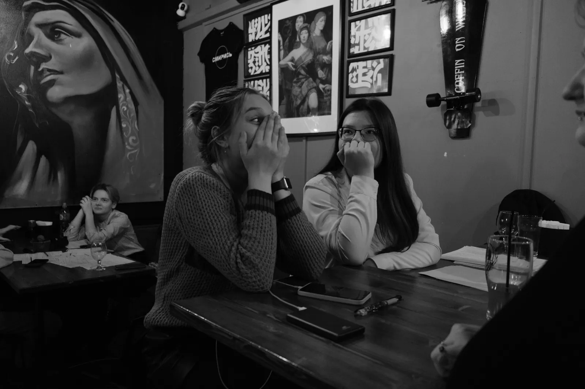
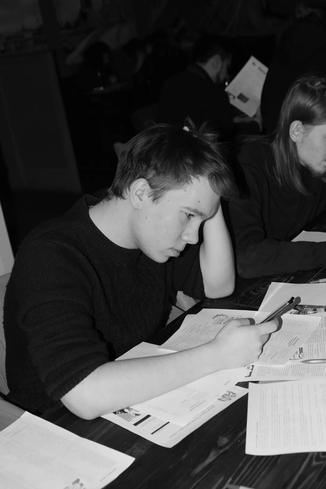

Общее дело
Перед вами запутанная история. Восстановите события и найдите объяснение, которое сходится с фактами.

ДЕТЕКТИВНАЯ ИГРА ДЛЯ КОМАНД
Соберите коллег за одним расследованием. Изучайте улики, обсуждайте версии и проверяйте догадки — здесь любая находка может изменить ход игры.
ОДНО ДЕЛО. МНОГО ВЗГЛЯДОВ
В «Детектуме» участники изучают одно дело и сами решают, какие зацепки проверить. Один замечает дату, другой — противоречие в показаниях. Общую картину команда собирает вместе.
Перед вами запутанная история. Восстановите события и найдите объяснение, которое сходится с фактами.
Адреса, газетные статьи, фотографии и показания открывают разные фрагменты истории.
Сопоставьте найденные факты, проверьте объяснения и сформулируйте ответ вместе.
Повод собрать коллег вне рабочих задач: познакомить сотрудников из разных отделов, отметить событие или просто провести вечер вместе.
Азарт расследования, неожиданные находки и живые обсуждения. Стройте версии, спорьте и замечайте то, что упустили другие.
Готовая игра с сюжетом и материалами. Вы выбираете дату и формат встречи, а детали проведения мы согласуем заранее.

Одна догадка меняет разговор. Кто-то находит подтверждение, кто-то замечает несостыковку — и обсуждение начинается заново.
ПЛАН РАССЛЕДОВАНИЯ
Команда знакомится с делом, выбирает направления расследования и проверяет предположения по материалам.
Узнайте, что предстоит расследовать, и изучите первые зацепки.
Открывайте адреса, находите материалы и решайте, что проверить следующим.
Делитесь находками, сравнивайте даты и показания, проверяйте версии.
Сформулируйте объяснение, которое лучше всего подтверждается найденными уликами.

ВНУТРИ ИГРЫ
Адресная книга помогает находить нужные места. Материалы дела и показания дают отдельные зацепки. Команда сопоставляет их, чтобы понять, куда двигаться дальше.


Каждый подключается откуда удобно. Откройте игру в браузере и обсуждайте находки в общем созвоне.
Часть коллег собирается в офисе, остальные присоединяются удалённо. Все исследуют одно дело и обмениваются версиями.
Соберитесь в офисе или на выбранной площадке. Изучайте материалы на экране и обсуждайте улики за одним столом.
Одно расследование в выбранную дату — для корпоративного вечера, знакомства коллег или праздника команды.
СЛЕДУЮЩИЙ ХОД — ЗА ВАМИ
Расскажите, сколько человек планирует играть и какой формат встречи вам удобен. Обсудим дату, условия и подойдёт ли «Детектум» вашей группе.
Укажите название компании, число участников и желаемый формат встречи. Ответим в переписке.
Обсудить корпоративный форматМы принимаем оплату на ИП с физических и юридических лиц. По карточке или переводом. Предоставляем все закрывающие документы. Также доступна оплата за рубежом.
Да, мы заключаем договор на проведение мероприятия.
Да, мы можем адаптировать игру под заказчика. Например, поменять названия персонажей на ваших сотрудников, добавить ваш офис на карту города и так далее. Обсуждается отдельно и подстраивается под конкретного клиента.
Мы можем разбить сотрудников на команды случайным образом, либо вы нам передаете списки команд, в которых сотрудники хотят играть.
Нет, это не похоже на квиз, это больше похоже на цифровую настольную игру.
Да, пробная версия игры доступна бесплатно для всех.
Ничего устанавливать не нужно, играть можно прямо в браузере.
Мы можем проводить игры до 500 человек без ограничений. Условия для большего количества людей оговариваются отдельно.
Да, мы предоставляем скидки при оплате нескольких игр.